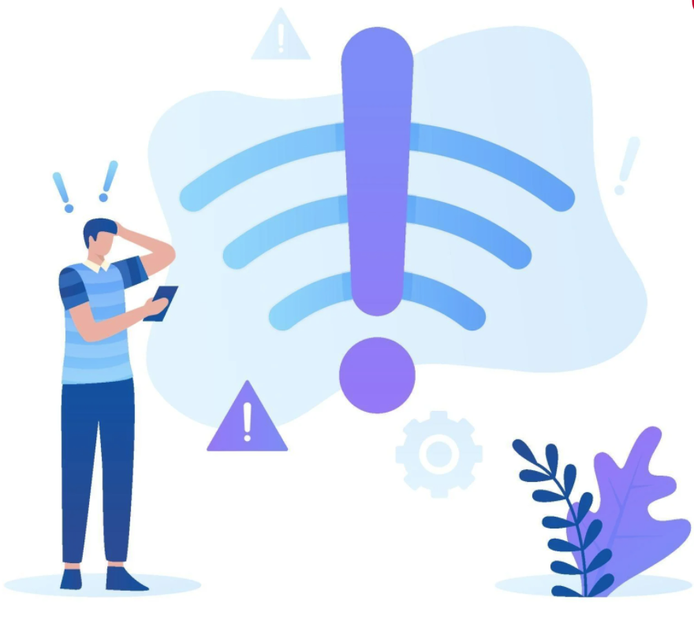

<ion-content>
  <div class="w-100 h-100 d-flex justify-content-center align-items-center px-4">
    <div class="text-center">
      <ion-text class="mt-5 title text-uppercase" color="primary">
        No Connection
      </ion-text>
      
      <ion-button (click)="reload()" class="mt-5" size="default">
        <i class="fas fa-sync mr-2"></i>
        Reload
      </ion-button>
    </div>
  </div>
</ion-content>
